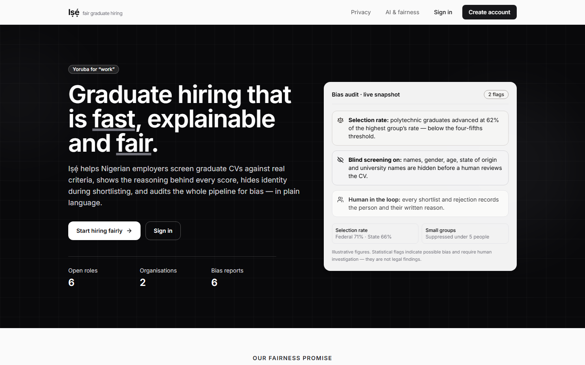
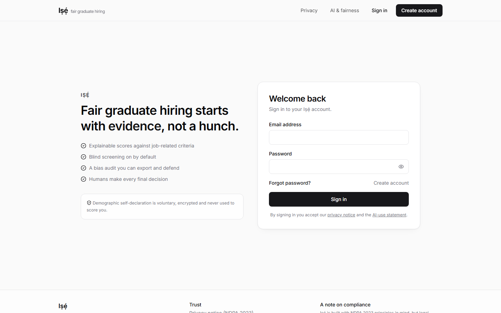
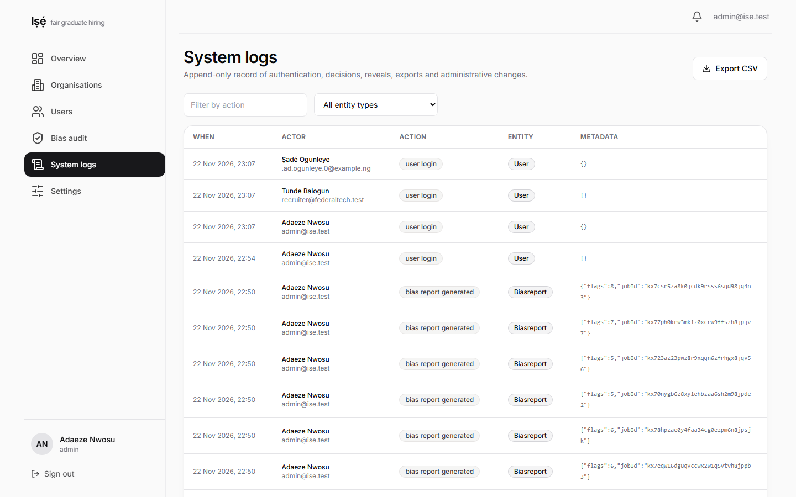
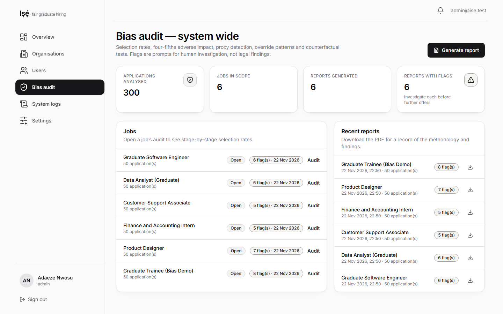
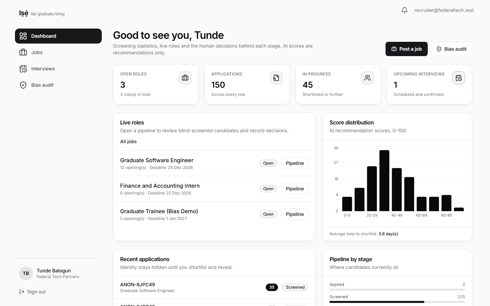
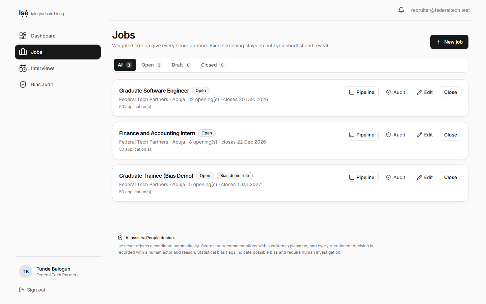
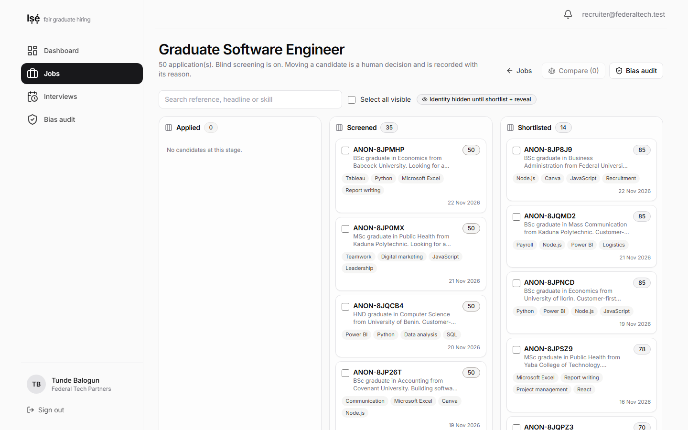
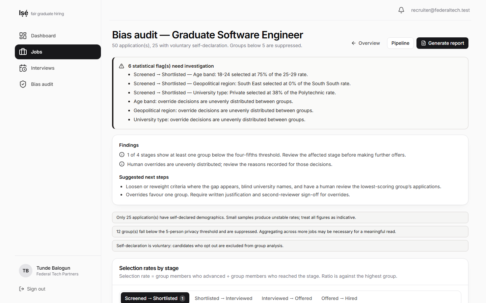
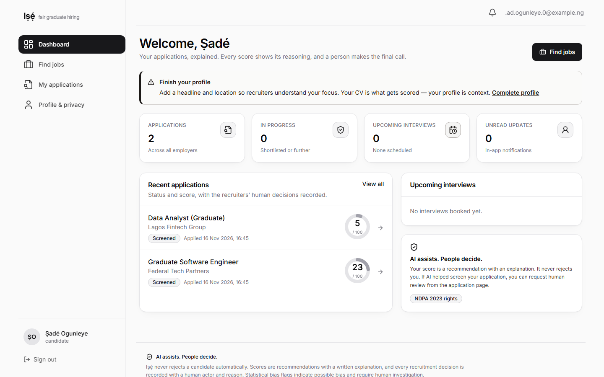

Department of Computer Science · Faculty of Science
Iṣẹ́: A Blind, Explainable and Auditable Graduate CV Screening Platform for Nigerian Employers
A serverless web application built on Convex and Vercel for fair, evidence-based graduate recruitment
BY
MATRICULATION NO.
LEVEL
SUPERVISOR
COURSE CODE & TITLE
A project report submitted in partial fulfilment of the requirements for the award of the
degree of the Department of Computer Science, University of Lagos, on the design and
implementation of Iṣẹ́ — a graduate recruitment platform that screens curriculum vitae
against job-related criteria, hides candidate identity until shortlisting, and audits
the resulting decisions for adverse impact.
NOVEMBER 2026https://ise-three-jade.vercel.app
Declaration
I hereby declare that this project report titled “Iṣẹ́: A Blind, Explainable and Auditable
Graduate CV Screening Platform for Nigerian Employers” is the result of my own work, carried
out in the Department of Computer Science, University of Lagos, under the supervision of the
supervisor named below. All sources of information consulted have been duly acknowledged in the
references, and no part of this report has been submitted elsewhere for the award of any degree
or certificate.
The software described in this report — the client application, the Convex functions, the
scoring rubric, the audit engine and the deployment configuration — was written by me. Libraries
and services used as dependencies are credited in Chapter 2 and in the references.
Name
Matriculation No.
Signature
Date
Certification
This is to certify that this project report was carried out by
(Matriculation Number
) in the Department of Computer Science, University of Lagos,
and has been read and approved as meeting the requirements for the award of the degree stated
on the cover page.
Project Supervisor
Signature
Date
Head of Department
Signature
Date
External Examiner
Signature
Date
Abstract
Abstract
Graduate recruitment in Nigeria is characterised by very high application volumes, short
screening windows and persistent reliance on institutional prestige, names and demographic
assumptions rather than job-related evidence. Automated CV screeners address the volume problem
but frequently reproduce those same assumptions at scale, while offering no record of why a
candidate advanced or was rejected. Iṣẹ́ (Yoruba: “work”) was built to test whether a small,
serverless platform can screen at volume, explain every score, withhold identity until a human
decides, and audit its own outcomes for adverse impact.
The system is a single-page React application backed entirely by Convex — a transactional
document database with serverless query, mutation and action functions — and deployed as a static
bundle on Vercel. Its data model comprises 27 tables covering organisations, users, sessions,
jobs, weighted criteria, knockout questions, CV files, parsed CVs, scores, staged pipeline
transitions, interviews, notifications, consent records, encrypted demographic declarations,
bias reports and an append-only audit log. Authentication uses server-issued opaque session tokens
stored as SHA-256 hashes; passwords are bcrypt-hashed inside a Node runtime. In blind mode the
scorer receives a CV stripped of name, email, phone, location and institution, and the recruiter
interface exposes only an HMAC-derived anonymous reference. Voluntary demographic declarations are
sealed with AES-256-GCM in a separate table that no scoring or recruitment path reads.
The audit engine applies the four-fifths rule to selection rates at every stage, suppresses groups
smaller than five to protect privacy, detects proxy signals, runs counterfactual name and
institution swaps, and reports override asymmetry. Evaluation used a seeded world of 150 candidates,
6 job adverts and 300 applications processed end to end with generated PDF CVs. All 300 were parsed
and scored; the audit surfaced 5 to 8 flags per job in the deliberately biased demo job and 2 flags
in the public live snapshot. Type checks and production builds complete without errors, and the
deployed system was verified in the browser across candidate, recruiter and administrator roles.
The report concludes that a whole recruitment backend can be operated at effectively zero marginal
hosting cost without weakening its privacy, auditability or fairness properties, and identifies the
limits of that claim: deterministic scoring is not a substitute for validation on real hiring
outcomes, and legal compliance with the Nigeria Data Protection Act 2023 still requires review by a
qualified professional.
Figure 6.1 — Public landing page with live bias snapshot
Figure 6.2 — Sign-in page
Figure 6.3 — Public AI-use and fairness statement
Figure 6.4 — Administrator overview
Figure 6.5 — Administrator user directory
Figure 6.6 — Administrator system log
Figure 6.7 — Global bias audit view
Figure 6.8 — Recruiter dashboard
Figure 6.9 — Recruiter job list
Figure 6.10 — Blind pipeline with anonymous references
Figure 6.11 — Per-job bias audit with flags
Figure 6.12 — Recruiter application detail
Figure 6.13 — Candidate dashboard with explanations
Figure 6.14 — Candidate application list
List of Tables
Table 2.1 — Comparison of related systems
Table 2.2 — Backend platform comparison
Table 3.1 — Functional requirements
Table 3.2 — Non-functional requirements
Table 3.3 — Feasibility summary
Table 3.4 — Development tools
Table 4.1 — Data model summary
Table 4.2 — Route map
Table 5.1 — Environment variables
Table 6.1 — Seeded evaluation dataset
Table 6.2 — Test cases and outcomes
List of Abbreviations
AES
Advanced Encryption Standard
NDPA
Nigeria Data Protection Act
API
Application Programming Interface
NDPC
Nigeria Data Protection Commission
ATS
Applicant Tracking System
RBAC
Role-Based Access Control
CV
Curriculum Vitae
SHA
Secure Hash Algorithm
GCM
Galois/Counter Mode
SPA
Single Page Application
HMAC
Hash-based Message Authentication Code
SSR
Server-Side Rendering
HND
Higher National Diploma
UI
User Interface
LLM
Large Language Model
WCAG
Web Content Accessibility Guidelines
Note on the diacritic: the platform name is written Iṣẹ́ throughout, with the
dot below the s (U+1E63) and the acute accent on the e (U+1E17). The same characters are used in
the user interface, in the generated PDF reports and in this document.
Chapter One
1 Introduction
1.1 Background to the study
Nigerian graduate recruitment is a volume problem before it is anything else. A single entry-level
vacancy at a Lagos bank, a fintech or a federal agency routinely attracts several hundred
applications within a fortnight, and a two-person human resources team is expected to triage them
while the vacancy is still open. Under that pressure, screening collapses into a sort-by-institution
exercise: the federal university on the CV is ranked above the polytechnic, the “serious” degree
above the HND, and the familiar name above the unfamiliar one. These are not hiring criteria. They
are proxies for family background, geography and prior access to expensive education, and they
systematically distribute opportunity away from candidates who studied at state universities,
polytechnics and colleges of education.
Applicant tracking systems (ATS) were introduced to absorb this volume, and newer products add
keyword matching, ranking models or large language models (LLMs) on top. Each of these solves the
throughput problem and creates two new ones. The first is opacity: a recruiter who is told
that a candidate scored 63 out of 100 has no way to explain that number to the candidate, to a
hiring manager, or to a regulator. The second is amplification: a model trained or prompted
on historical hiring decisions learns the same institutional preferences that the manual process
encoded, and now applies them consistently, at scale, with the appearance of objectivity
(Barocas and Selbst, 2016; O'Neil, 2016).
Two developments make a different design possible. The first is legal. The Nigeria Data Protection
Act 2023 (NDPA) imposes lawful-basis, minimisation, storage-limitation and data-subject-rights
obligations on anyone processing personal data in Nigeria, and expressly frames automated
decision-making as something a data subject may contest. A recruitment system built after 2023 must
be able to answer, per candidate, what data was held, why it was held, and what a human being did
with it. The second is architectural. Managed serverless platforms now offer transactions, indexes,
file storage, scheduled jobs and server-side functions without a database administrator, which makes
it possible for a small team — or a single student project — to run a compliant, auditable backend
at effectively zero marginal cost.
Iṣẹ́ (Yoruba for “work”) is a response to both. It is a complete graduate recruitment platform in
which the scoring is deterministic and inspectable, identity is withheld from the reviewer until a
shortlist exists, voluntary demographic data is encrypted in a table that no scoring path reads,
and every decision — including every override — is written to an append-only audit log that feeds a
fairness report. The name is deliberate: the platform exists to make work reachable on the basis of
evidence rather than pedigree.
1.2 Statement of the problem
Graduate screening in Nigeria currently fails on four measurable grounds, and no single existing
tool addresses all four at once.
Volume without evidence. Hundreds of CVs are read in a few days, so recruiters
optimise for fast signals — institution type, degree classification, name — rather than the skills
and experience actually named in the advert.
Unaccountable decisions. Rejections are rarely recorded with a reason. When a
candidate asks why they were not shortlisted, there is usually nothing to consult; when a
regulator asks, there is nothing to produce.
Identity contamination. Names, gender, age, marital status and state of origin
are visible at the moment of screening, so the decision cannot be separated from them, and there
is no counterfactual evidence either way.
Unmeasured adverse impact. Nobody computes selection rates by group at each stage,
so a gap that would fail the four-fifths threshold in equality law can persist for years unnoticed.
Prohibitive running cost. The conventional stack for a system like this — an
application server, a managed PostgreSQL instance, object storage, a mail provider and a queue —
costs money every month whether or not anyone applies. For an institution, a research prototype or
a student project, that cost is often the reason the system is abandoned after the demonstration.
The problem addressed here is therefore not merely “screen CVs faster”. It is to build a screening
system whose decisions can be explained to the candidate, justified to a hiring manager, audited for
adverse impact, and operated continuously at negligible cost.
1.3 Aim and objectives
The aim of this project is to design and implement a web-based graduate CV screening platform that
ranks candidates on job-related evidence, protects candidate identity during shortlisting, and
audits its own outcomes, while running entirely on a managed serverless backend.
The specific objectives are to:
design a data model that separates identity, evidence and voluntary demographic data into tables with different access paths;
implement deterministic, weighted scoring against recruiter-defined criteria with a written explanation for every score;
enforce blind screening by default, exposing candidates only through an HMAC-derived anonymous reference until an explicit, logged reveal;
implement an append-only audit trail covering authentication, scoring, stage changes, overrides and report generation;
implement a bias-audit engine that computes selection rates per stage, applies the four-fifths rule, suppresses small groups and runs counterfactual tests;
implement NDPA-aligned rights — consent records, encrypted demographic declarations, data export and erasure requests;
deploy the complete system on Convex and Vercel and evaluate it end to end with a realistic seeded dataset.
1.4 Scope and delimitation
The system covers the recruitment pipeline from advert to hire for graduate and internship roles:
job creation with weighted criteria and knockout questions, candidate application with CV upload,
CV parsing and scoring, stage transitions through a drag-free pipeline board, interview slot
booking, recruiter notes and comparisons, candidate notifications, and a per-job or organisation-wide
fairness audit with a downloadable report.
The following are explicitly outside the scope of this implementation:
Outbound email and SMS delivery. Verification and notification messages are written
to an in-app notification table and readable in the interface; no external mail or messaging
provider is integrated. This keeps the running cost at zero and removes a processor from the data
protection analysis. The message templates and delivery points are present in the code, so a
provider can be attached later without redesign.
LLM-based scoring. Scoring is deterministic and rubric-driven. The records written
with each score include the model label and prompt version precisely so that a future LLM-backed
scorer can be introduced without losing traceability, but no paid model API is called in this
version.
Interview scheduling against external calendars and background-check providers.
Legal certification. The privacy notice, consent capture, retention and subject
rights are implemented to NDPA 2023 principles, but compliance must be reviewed by a qualified
Nigerian data-protection professional before the system is used on real candidates.
The evaluation in Chapter 6 uses synthetic candidates generated by the project's own seeder, not real
applicant data.
1.5 Significance of the study
For candidates. Every applicant receives a score with a component-by-component
explanation, sees the stage they reached, and can request human review of an AI-assisted decision.
Identity is not the first thing a reviewer sees.
For recruiters. The pipeline board and the criteria editor replace informal triage
with a defensible process: the same rubric is applied to every CV, scores are reproducible, and the
reason for every stage change is stored against a named user.
For employers and regulators. The audit report answers the question the NDPA makes
unavoidable — what did the automated system do, to whom, and with what measured effect — with
selection rates, four-fifths ratios, proxy detection, counterfactual score gaps and override
analysis.
For research and teaching. The project demonstrates that a fairness-aware, privacy-
preserving recruitment backend does not require enterprise infrastructure. Its whole backend is 20
Convex modules over 27 tables, deployed with two commands, and its marginal hosting cost after the
free tier is the cost of the requests actually made.
1.6 Reason behind the build
Three practical considerations determined the shape of this project, and they are stated plainly
here because they explain several design decisions that would otherwise look arbitrary.
1. A real fairness problem, not a hypothetical one. Nigerian graduate hiring has a
documented hierarchy of institutions — federal university above state university above polytechnic —
that has little to do with the work being advertised. A screener that ignores identity but still
ranks by institution prestige has changed nothing. This is why blind mode strips the institution
name as well as the candidate's name, and why the audit engine treats institution type as a proxy
feature that must be reported on rather than a legitimate criterion.
2. The cost of the conventional stack was the constraint. An earlier version of
this system ran on Express, Prisma and a managed PostgreSQL instance, with S3-style object storage
for CV files and a hosted mail provider. Every one of those components bills continuously: a
database instance is charged whether it holds three applications or thirty thousand, and object
storage is charged whether or not a single CV is read. For a platform aimed at institutions that
cannot commit a monthly infrastructure budget, that model is the reason such tools do not get
deployed. The rewrite moves the entire backend into Convex — database, file storage, scheduled
functions and server-side functions in one billable unit — and the frontend into a static bundle on
Vercel. The resulting system runs at no cost on the free tiers in normal use and scales in
proportion to traffic rather than to the existence of the server.
3. A demonstration that compliance and fairness are engineering decisions. Privacy
notices are cheap; encryption boundaries, access-path separation and immutability are not. The project
was built to show the second kind: demographic declarations that no scoring function can read,
sessions that exist only as hashes, an audit log that is append-only by construction, and limits
enforced in the data layer rather than the interface.
1.7 Organisation of the report
Chapter Two reviews the literature on algorithmic screening, adverse impact and the
four-fifths rule, the NDPA 2023, blind recruitment and explainability, then compares existing systems
and platform options. Chapter Three analyses the existing manual process and states
the functional and non-functional requirements, with a feasibility study. Chapter Four
presents the design: architecture, data model, authentication, blind screening, the audit engine,
privacy and interface. Chapter Five documents the implementation with the actual code
used, including the schema, authentication, upload and extraction, scoring, the client adapter, the
client-side PDF report and the deployment configuration. Chapter Six reports the
evaluation: test cases, results, and fourteen screenshots of the deployed system. Chapter
Seven concludes and recommends further work. References and two appendices follow.
Reproducibility. Every code listing in this report is taken verbatim from the
repository at the deployed commit. The live system is at
https://ise-three-jade.vercel.app, its Convex production deployment is
elegant-wolverine-662, and the seeded demonstration dataset is described in
Section 6.1 so that any figure reported in Chapter 6 can be regenerated.
Chapter Two
2 Literature Review and Background
2.1 Algorithmic screening in graduate recruitment
The argument for algorithmic screening is consistency. A human reviewer reading the two-hundredth CV
of the day applies a different standard from the one they applied to the first, and the difference is
not random — it tracks fatigue, time pressure and unconscious preference. A rule that is applied
identically to every document removes that variance, and a rule that records its inputs makes the
decision reviewable.
The argument against is that consistency without validity simply industrialises a bad criterion.
Barocas and Selbst (2016) show that data-mining tools built on historical decisions inherit the
discrimination present in those decisions, and that the inherited bias is hardest to see precisely
where the model is most accurate. O'Neil (2016) describes the same failure as the “weapon of math
destruction”: a proxy variable, convenient and measurable, displacing the construct the organisation
claims to care about. In hiring, the classic proxies are institution prestige, name, postal address
and gaps in employment history.
Raghavan et al. (2020) provide the most direct empirical warning for this project. Auditing a
widely used commercial resume-screening tool, they found that changing only candidate names produced
materially different rankings for otherwise identical CVs, with the effect concentrated on
candidates whose names signal particular demographic groups. The lesson is not that scoring should
be abandoned but that name-bearing inputs must be removed from the scorer, and that the removal must
be tested rather than assumed — which is why the audit engine in this project runs counterfactual
name swaps and reports the score delta rather than trusting the design intent.
A second strand of work concerns the decision rather than the score. High-volume screening
tends to collapse into a single number that recruits a shortlist automatically. The design position
adopted here follows the human-in-the-loop literature (Parasuraman, Sheridan and Wickens, 2000) and
the accountability requirements of the NDPA: the system may recommend, rank and explain, but a named
human must move a candidate forward or reject them, and the reason must be recorded.
2.2 Adverse impact and the four-fifths rule
Adverse impact is the statistical signature of a selection procedure that disadvantages a protected
group. The four-fifths rule, formalised in the United States Uniform Guidelines on Employee
Selection Procedures (EEOC, 1978), is the simplest screening test for it: the selection rate of
any group is divided by the selection rate of the group with the highest rate, and a ratio below 0.80
is treated as evidence requiring investigation.
The rule is a screening device, not a proof of discrimination, and it has well-known weaknesses: it
is unstable with small groups, it is sensitive to which stage of the process is measured, and it
compares groups rather than explaining any individual decision. Those weaknesses are addressed in this
implementation by suppressing groups smaller than five (Section 4.5), by computing rates per stage
rather than only for the final outcome, and by pairing the statistical result with a written
methodology note and an explicit statement that a flag is not a legal finding.
2.2 Adverse impact and the four-fifths rule (continued)
The computation implemented in shared/domain.ts follows the definition
directly. Selection rates are computed per group per stage, groups below the privacy threshold are
marked suppressed and excluded from the comparison, and the remaining rates are divided by the
highest rate to give an impact ratio. The threshold and severity bands are explicit:
export function selectionRates(observations: GroupObservation[], minGroupSize = 5): GroupStat[] {
const buckets = new Map<string, { total: number; selected: number }>();
for (const obs of observations) {
const key = obs.group || 'Not declared';
const bucket = buckets.get(key) ?? { total: 0, selected: 0 };
bucket.total += 1;
if (obs.selected) bucket.selected += 1;
buckets.set(key, bucket);
}
return [...buckets.entries()]
.map(([group, { total, selected }]) => ({
group,
total,
selected,
rate: total ? selected / total : 0,
suppressed: total < minGroupSize,
}))
.sort((a, b) => b.rate - a.rate || b.total - a.total);
}
export function adverseImpact(groups: GroupStat[], threshold = 0.8): ImpactAnalysis {
const eligible = groups.filter((g) => !g.suppressed && g.total > 0);
if (eligible.length < 2) {
return {
highestGroup: eligible[0]?.group ?? null,
highestRate: eligible[0]?.rate ?? 0,
groups: groups.map((g) => ({ ...g, ratio: 1, severity: 'none' as Severity, flagged: false })),
flagged: false,
summary: 'Not enough declared groups above the privacy threshold to run an adverse-impact test.',
};
}
const highest = eligible.reduce((best, g) => (g.rate > best.rate ? g : best), eligible[0]);
const results: ImpactResult[] = groups.map((g) => {
const ratio = highest.rate > 0 ? g.rate / highest.rate : 1;
Listing 2.1 — Selection rates and the four-fifths ratio (shared/domain.ts)
Two implementation details matter for interpretation. First, a group with fewer than five members
keeps its row in the report but is excluded from the comparison, so a recruiter can see that data was
collected without being invited to draw a conclusion from three people. Second, when fewer than two
eligible groups exist the function returns an explicit “not enough data” summary instead of a
division by zero or a silent pass. On the seeded dataset this fires frequently and is reported
honestly: the deployed job audit states that 12 group rows fall below the five-person threshold.
2.3 The Nigeria Data Protection Act 2023
The NDPA 2023 establishes the Nigeria Data Protection Commission and sets the framework for
processing personal data in Nigeria. For a recruitment system the operative obligations are these:
Lawful basis and purpose limitation. Candidate data may be processed for the recruitment purpose it was collected for, and not silently reused for unrelated scoring or marketing;
Data minimisation. Only data necessary for the purpose should be collected — which bears directly on the decision not to collect marital status or gender for screening;
Storage limitation. Personal data must not be kept indefinitely; the platform records retention intent and exposes erasure requests;
Data-subject rights. Access, correction, deletion and objection, including in relation to automated decisions;
Security. Appropriate technical measures, including encryption and access control, proportionate to the data;
Accountability. The controller must be able to demonstrate compliance, which in practice means records.
Translating those into design decisions produced five concrete mechanisms. Consent is recorded per
user with a versioned notice identifier and a timestamp. Demographic declarations are voluntary,
stored in a separate table and sealed with AES-256-GCM. Recruiters cannot read a candidate's
declaration; the audit engine aggregates it inside a Node runtime and returns only counts and rates.
A candidate can lodge an export or erasure request from their own profile, and the request appears in
the administrator's queue. Finally, the audit log records every access-relevant action with the actor,
so accountability is a query rather than an assertion.
The system is not, and does not claim to be, certified compliant. The privacy notice states that
legal compliance must be reviewed by a qualified Nigerian data-protection professional before
production use, and the audit page repeats that its statistical flags are indicators for human
investigation rather than legal findings. Both statements are visible in the deployed interface
(Figure 6.3).
2.4 Blind screening and explainable scoring
Blind recruitment removes identifying information from the material a reviewer sees. The evidence for
it is strongest in orchestral auditions, where the introduction of screens substantially increased the
proportion of women hired (Goldin and Rouse, 2000), and it underpins the “name-blind” recruitment
policies adopted by several large employers. The mechanism is straightforward: if the attribute is not
present, it cannot influence the judgement.
Blind review has two well-documented limits. The first is leakage: a CV can reveal identity
indirectly, through the university attended, a religious affiliation, an ethnic-sounding society, a
home address or the pattern of secondary schools. Removing the name while keeping the institution
leaves most of the signal intact in the Nigerian context. This implementation therefore removes the
institution name as well, unless the job deliberately enables the bias-demonstration rule, and it
reports institution type as a proxy feature in the audit. The second limit is the reveal:
once a candidate is shortlisted, identity returns, and so does the possibility of influence. The
platform makes the reveal an explicit, logged action performed by a named recruiter, so that the
moment identity enters the process is itself part of the record.
Explainability is treated here as a data-structure problem rather than a presentation problem.
Instead of producing a total and then attempting to rationalise it, the scorer builds the explanation
and the total from the same list of evaluated criteria: for each criterion it records whether it was
met, the weight awarded, the evidence found and the evidence expected. The total is the sum of the
awarded weights normalised to 100. A score is therefore always accompanied by the exact list of
criteria that produced it, and it is reproducible: the same CV parsed the same way against the same
rubric yields the same number, which is not true of a sampling-based model.
Two limitations follow from this choice and are stated rather than hidden. Deterministic rubric
matching cannot judge the quality of experience, only its presence and relevance, so a strong
candidate whose CV uses unexpected vocabulary can score low. And because the rubric is authored by the
recruiter, a badly weighted rubric produces a systematically bad ranking — which is precisely why the
audit reports override asymmetry and per-stage selection rates, so a mis-specified rubric becomes
visible in the outcome rather than remaining an invisible assumption.
Strong pipeline, weak on blinding and on local legal framing; per-seat pricing; no four-fifths audit out of the box
Keyword screeners and CV parsers
Extract fields, match keywords, rank by count
No explanation of a rank, no audit, no identity separation; keyword counts reward CV formatting
AI ranking add-ons
Semantic similarity or LLM scoring
Opaque and sampling-dependent; historically biased against name-signalled groups (Raghavan et al., 2020)
Fairness toolkits (AI Fairness 360, Fairlearn)
Metric computation over a supplied dataset
Libraries, not systems: no recruitment workflow, no consent, no audit log
Local job boards (Jobberman, MyJobMag)
Advertise vacancies, receive applications
Distribution, not screening; no scoring, no shortlisting workflow, no audit
Table 2.1 — Comparison of related systems
The gap the project targets is the intersection: a screening workflow with the blinding and
auditability of a fairness toolkit, the pipeline ergonomics of an ATS, and the local legal framing of
an NDPA-aware product, at a cost that a department can sustain.
2.6 Platform options and selection
Five realistic options were considered for the backend. The criteria were: transactionality for
pipeline changes, a queryable store with indexes, file storage for CVs, scheduled jobs for reminders
and retention, secure server-side secret handling, and total cost of ownership under intermittent load.
Option
Fit
Why it was not chosen
Express + Prisma + managed PostgreSQL (the original implementation)
Complete control, familiar relational modelling
Four separately billed components (compute, database, object storage, mail); a database instance is charged even when idle; the server must be operated and secured by hand
Firebase (Firestore + Auth + Storage)
Fast to start, strong client SDKs
Client-side security rules are the primary boundary; aggregate queries and multi-document transactions are awkward; vendor lock-in for auth
Supabase (Postgres + Auth + Storage)
Real SQL, generous free tier
Requires row-level security design and a separate function runtime; the free tier pauses inactive projects
Self-hosted Node on a small VPS
Cheapest predictable bill
Operating system patching, backups and TLS become the project's responsibility; single point of failure
Convex was selected because the properties this project needs — serialisable mutations, indexed
queries, file storage with signed upload URLs, cron scheduling and server-held secrets — are all
first-class rather than assembled from separate services. Its function model also removes an entire
layer: there is no HTTP router to write, no ORM mapping and no separate validation schema, because the
arguments of each function are declared with Convex validators and the client receives the resulting
types. The trade-off accepted is vendor coupling: the functions are Convex-shaped, and moving them
would mean rewriting the data access layer, though the domain logic itself was deliberately kept in
framework-free modules under shared/ for exactly that reason.
The client remained a React single-page application built with Vite, deployed as static files. No
server-side rendering is used, so the entire hosting footprint is a CDN plus the Convex deployment.
2.7 Summary of the review
The literature supports three conclusions that shaped the implementation. Automated screening is
valuable for consistency but inherits and amplifies historical bias unless the proxy features are
removed and the outcome is measured. The four-fifths rule is a usable screening test provided its
small-sample instability is handled explicitly. And legal accountability, under the NDPA 2023, is
satisfied by records and boundaries rather than by statements of intent. The platform described in
the following chapters is an attempt to implement all three in one deployable system.
Chapter Three
3 System Analysis and Requirements
3.1 The existing manual process
The process analysed is the one used by a typical Lagos employer hiring for a graduate role. It was
reconstructed from the workflow the earlier version of this system was built to replace, and it is
summarised below.
1. Vacancy drafted in a document → posted to a job board and social media
↓
2. Applications arrive as email attachments → saved into a shared folder
↓
3. Recruiter opens each CV → reads name, school, class of degree first
↓
4. Shortlist typed into a spreadsheet → informal ranking by “fit”
↓
5. Invitations sent by email → replies tracked in the same mailbox
↓
6. Interviews held → outcome recorded (sometimes) in the spreadsheet
↓
7. Offer made → unsuccessful candidates usually not told why
Figure 3.1 — Manual screening workflow
Four failure modes follow from this workflow. The shared folder is not access-controlled per
organisation, so CVs accumulate indefinitely with no retention rule. The spreadsheet holds personal
data with no consent record and no lawful-basis note. The ranking is not reproducible — a second
recruiter would produce a different shortlist from the same CVs — and no reason is attached to any
rejection. Finally, nothing in the process can produce a selection rate by group, so adverse impact
is invisible even when it is severe.
The requirements below were derived from those failures, with each functional requirement traceable
to at least one of them.
3.2 The proposed system
The proposed system replaces steps 2 to 7 with an authenticated platform. A candidate registers,
builds a profile, uploads a CV for a specific vacancy and answers that vacancy's knockout questions.
The CV is stored in Convex file storage, its text is extracted, and it is parsed into structured
facts. A deterministic rubric scores those facts against the vacancy's weighted criteria and produces
a total, a recommendation and a per-criterion explanation. The recruiter works a three-column board —
applied, screened, shortlisted — in which candidates appear only as anonymous references with their
score and education summary. Moving a candidate is a named human action with an optional reason, and
it is logged. Once shortlisted, a recruiter may reveal identity; interviews are booked from published
availability windows. The audit view recomputes selection rates for every stage from stored decisions
and demographic declarations, and a report can be generated and downloaded as a PDF.
3.3 Functional requirements
ID
Requirement
Description
FR1
Account management
Register as candidate or recruiter, verify email token, sign in, sign out, reset password; administrators can deactivate accounts
FR2
Role-based access
Candidate, recruiter and administrator roles; recruiter data scoped to their organisation; every server function checks the session and the scope
FR3
Job authoring
Create a vacancy with title, description, location, deadline, weighted criteria (must-have and nice-to-have) and knockout questions
FR4
Application
Apply with a PDF or DOCX CV up to 4 MB, answer knockout questions, accept the AI-use notice; duplicate applications to the same vacancy are prevented
FR5
CV storage and extraction
Upload to Convex file storage, extract text, record extraction status and failures, retain the original file for download
FR6
CV parsing
Derive name, contact, education (institution, type, degree level, class, years), experience, skills, certifications and languages from the extracted text
FR7
Scoring
Score against the rubric with weights, produce a 0–100 total, per-criterion met/missed flags, an AI recommendation and a stored model/prompt version
FR8
Blind pipeline
Show anonymous references only, with identity hidden until an explicit reveal; hide institution names in the board view
FR9
Stage management
Move an application through a defined stage machine, recording actor, reason and timestamp; support bulk movement and single-candidate override
FR10
Notes and comparison
Add internal notes; compare two or more shortlisted candidates side by side on the same rubric
FR11
Interviews
Publish availability windows, generate slots, allow a candidate to book or reschedule, record completion and outcome
FR12
Notifications
In-app notifications for stage changes, interview bookings, reminders and account events, with per-user unread state
FR13
Audit trail
Append-only log of authentication, scoring, stage changes, reveals, overrides, exports and report generation with actor and entity references
FR14
Bias audit
Selection rates per stage and group, four-fifths ratios with severity, proxy detection, counterfactual tests, override analysis and suggested fixes
FR15
Report export
Generate a PDF audit report client-side with methodology notes and sample-size warnings
FR16
Data-subject rights
Record consent with notice version, allow withdrawal, support export and erasure requests, and expose a queue to administrators
FR17
Administration
Organisation and user management, system settings, global audit view, data-request handling and system logs
Table 3.1 — Functional requirements
3.4 Non-functional requirements
Attribute
Target
How it is satisfied in the design
Security — authentication
NFR1
Opaque 48-byte session tokens issued server-side, stored only as SHA-256 hashes with an expiry and revocation timestamp; passwords bcrypt-hashed (cost 10) in a Node runtime and never returned by any function
Security — authorisation
NFR2
Every function takes a token, resolves the session to a user, and checks role plus organisation scope before reading or writing; a foreign organisation's job returns FORBIDDEN
Privacy
NFR3
Identity stripped before scoring; institution hidden in blind mode; demographic declarations encrypted with AES-256-GCM in a table no scoring path queries
Auditability
NFR4
Append-only audit writes only (insert, never update or delete); every reveal and override records actor, entity and reason
Correctness of pipeline state
NFR5
Stage transitions validated against an allowed-transition map inside a serialisable mutation, so concurrent recruiters cannot skip or reverse stages silently
Performance
NFR6
Indexed access paths on every list query (job, candidate, stage, organisation, token hash); pipeline page loads 50 applications in one indexed read
Accessibility
NFR7
Semantic landmarks, skip link, labelled form controls, visible focus states, AA contrast, status conveyed by text as well as colour; the accessibility tree of the deployed pages was inspected during evaluation
Usability
NFR8
Three-column board with the same vocabulary as the requirement; every score links to its explanation; destructive actions require a written reason
Portability
NFR9
Frontend is a static bundle deployable to any CDN; domain logic kept in framework-free modules under shared/
Cost
NFR10
No always-on server, no managed database instance, no mail provider; the system is idle at zero cost and bills per function call
Availability
NFR11
Both runtimes are managed platforms with their own replication; no single process the project must keep alive
Maintainability
NFR12
Strict TypeScript across client, functions and domain; a single type-check gate in CI-equivalent script; migrations expressed as schema changes
Table 3.2 — Non-functional requirements
3.5 Feasibility study
Technical feasibility. Every capability required is available on the chosen platform:
transactional mutations for stage changes, indexes for the pipeline and audit lists, file storage with
signed upload URLs for CVs, Node-runtime actions for bcrypt and PDF text extraction, and cron
functions for reminders and retention. The client needs nothing beyond a static host. No requirement
in Table 3.1 depends on infrastructure the project would have to operate.
Economic feasibility. This was the decisive criterion. The previous stack combined
four billed services: an application server, a managed PostgreSQL instance, object storage and an email
provider. The database instance alone is charged continuously, which for a system that receives a few
hundred applications per hiring season means paying for idle capacity eleven months a year. The
replacement has exactly two billable surfaces — Convex function calls, storage and bandwidth, and
Vercel static hosting — both with free tiers that cover normal departmental use, and both scaling with
traffic rather than with the existence of a server. There is no monthly floor to budget for.
Criterion
Verdict
Basis
Technical
Feasible
All required primitives exist as managed services; no bespoke infrastructure
Economic
Feasible
No always-on server or database instance; idle cost approaches zero; scales per request
Operational
Feasible
Deployment is two commands; no patching, backups or TLS to manage
Schedule
Feasible
Backend, client, audit engine and deployment completed within the project window
Legal
Conditional
NDPA principles implemented; professional review required before real candidate data is processed
Table 3.3 — Feasibility summary
3.6 Development tools and technologies
Tool
Version
Role in the project
TypeScript
5.9.3
Language for client, Convex functions and domain modules; strict mode
Client-side audit report generation with embedded DejaVu fonts for diacritics
Vercel
CLI 65
Static hosting for the built SPA, environment configuration, deployment alias
Git / GitHub
—
Version control and remote backup of the full source
Table 3.4 — Development tools
Chapter Four
4 System Design
4.1 System architecture
The system is a thin client over a function-first backend. The browser runs the React application and a
Convex client; it holds nothing but a session token in local storage. Every read and write is a named
Convex function that validates its arguments, resolves the session and enforces scope. Files live in
Convex file storage and are reached through short-lived signed URLs. The audit engine runs partly as a
Node action — because it needs aggregation over rows and, in the report path, font embedding — and
partly as queries that feed the audit screens.
Vercel — static bundle of the SPA, CDN, SPA rewrite, immutable asset caching
Figure 4.1 — System architecture
The separation that matters most is not client/server but table. Identity, evidence and
voluntary demographic data live in different tables with different readers, and the only function that
can open a demographic declaration runs in a Node action that recruiting code never calls. That is a
structural guarantee rather than a naming convention.
4.2 Data model
The schema defines 27 tables. Every list query in the application is served by an index; the table
below groups them by responsibility and names the indexes that carry the main access paths.
Group
Tables
Purpose and key indexes
Identity and access
users, sessions, emailTokens
Accounts with role and organisation; sessions by token hash and expiry; verification and reset tokens by user and type
Internal notes; booked interviews; generated slots; published availability
Communication
notifications, notificationPreferences
In-app messages with read state; per-user channel preference
Audit and fairness
auditLogs, biasReports, counterfactualRuns
Append-only log by entity and action; stored reports; counterfactual score deltas
Platform
settings
Key-value configuration read by both functions and screens
Table 4.1 — Data model summary (27 tables)
4.2 Data model (continued)
Three modelling decisions carry most of the design intent and are worth stating explicitly.
The application is the unit of process, not the candidate. A candidate may apply to
several vacancies, and each application has its own stage, score, notes and history. The stage machine
is therefore attached to applications, and blind mode is a property of the
view in which the application is rendered, not of the candidate record.
Derived data is stored, not recomputed on every read. Parsed CV data, totals and
per-criterion results are persisted at scoring time. This is what makes the audit possible: the audit
engine can recompute counterfactual scores months later against the same rubric version, because both
the parsed facts and the criteria inputs were stored rather than transient.
The audit log is append-only by construction. There is no update or delete function
for auditLogs anywhere in the codebase; the only writer inserts. Any code
path that changes a decision (stage change, reveal, override, export, report generation) calls the same
helper, which inserts one row with actor, action, entity type, entity id, reason and metadata.
Listing 4.1 — Scores, sealed declarations and the append-only audit log (convex/schema.ts, excerpt)
Note that demographicDeclarations stores a single ciphertext in
payload. There is no column a recruiter could filter on and no join that would
bring a declaration into a pipeline view;
the audit engine reads the rows, opens them inside the Node action, aggregates, and returns only counts.
4.3 Authentication and session design
Authentication was implemented directly rather than delegated to a provider, for two reasons: the
role and organisation claims needed by every function are part of the domain model, and a
self-contained design keeps the NDPA analysis entirely within one system. The flow is:
The client posts email and password to the auth.login action;
The action loads the user, compares the password with bcrypt inside the Node runtime, and rejects inactive or deleted accounts;
On success it generates 48 random bytes, stores only the SHA-256 hash of the token in a sessions row with an expiry, and returns the raw token once;
The client keeps the raw token in local storage and sends it with every call;
Each function resolves the token by hashing it and looking up the session by index, then loads the user and checks role and scope.
The database therefore never contains a usable credential: an attacker with a full dump of the
sessions table has hashes that cannot be replayed. Revocation is a timestamp
on the session row, and password reset issues a separate single-use token whose hash is stored in
emailTokens with its own expiry.
Two further decisions belong here. Registration requires an explicit acceptance of the AI-use notice,
stored on the user record, and it issues an email-verification token immediately — the token is
delivered in-app because no mail provider is integrated. Administrator-created accounts have no usable
password until a reset is completed, which is why the login handler treats a bcrypt comparison failure
as “not valid” rather than as an error.
Listing 4.2 — Login issues an opaque token and stores only its hash (convex/auth.ts)
4.4 Blind screening design
Blind screening is enforced at two independent points, because enforcing it only in the interface would
leave the scorer free to read identity.
In the scorer. Before a CV reaches the rubric it is passed through an identity-stripping
function that removes name, email, phone and location, and the caller additionally blanks the
institution name unless the vacancy is the explicit bias demonstration job. The rubric therefore
receives only the evidence it is supposed to judge: degrees, classes, fields of study, years of
experience, skills, certifications and languages.
Listing 4.3 — Identity removal before scoring (shared/domain.ts)
In the interface. The recruiter board renders applications through a blind view
builder whose inputs are the anonymous reference, the reveal flag, the identity fields, the parsed CV,
the extracted text and a hide-university flag. When the reveal flag is false the builder returns the
reference plus evidence, and no identity fields at all — they are not returned and then hidden with CSS,
they are absent from the payload.
Listing 4.4 — The blind view builder (shared/domain.ts, signature)
The anonymous reference is an HMAC of the application id keyed with a server-held secret
(APP_SECRET), rendered in the board as ANON-8JPMHP and
similar. It is stable for the session, so a recruiter can discuss a candidate without knowing who they
are, and it cannot be reversed without the key. Revealing identity is a mutation that records the actor,
the application and, when supplied, a reason, and writes an audit row; from that point the application
is marked revealed and the identity is returned by the detail query. Figures 6.10 and 6.12 show the two
states side by side.
4.5 Fairness audit design
The audit is a pipeline of three stages rather than a single query, because the work it does differs in
kind: reads that can run in the transaction, computation that needs a Node runtime, and writes that must
be durable.
Snapshot. A query walks the applications for a job (or an organisation), joins each
application to its stage history, its stored score and — where one exists — its demographic
declaration, and returns plain rows. Row assembly is deliberately separated into its own query
(auditData:snapshotRows) so that the aggregation step has a stable, testable
input.
Computation. A Node action opens the declarations, derives group labels (age band,
state or geopolitical region, gender, institution type, degree level), computes selection rates per
stage, and applies the four-fifths rule. It then tests proxies: does a group's score gap persist when
the rubric is re-run with a counterfactual name swap, and with a counterfactual institution change?
Override asymmetry is computed from the recorded human decisions, not from the model's output.
Persistence. The report is written to biasReports with its
findings, flag count, methodology text and sample size, and the counterfactual deltas to
counterfactualRuns. Writing the report also writes an audit row, so generating
a fairness report is itself an audited action.
The report deliberately includes three kinds of caveat alongside its findings: a sample-size warning when
the declared population is small, a suppression note listing how many group rows fell below the
five-person threshold, and a statement that self-declaration is voluntary so non-declaring candidates
are excluded from the analysis. On the seeded job audit shown in Figure 6.11, the report states that only
25 applications carry a declaration, that 12 group rows are suppressed, and that a flag is an indicator
requiring human investigation rather than a legal finding.
4.5 Fairness audit design (continued)
The six flag families the engine can raise are worth stating because they correspond to the failure
modes identified in Chapter 2, not to generic statistical noise:
Flag
What produces it
Intended human response
Stage adverse impact
A group's selection rate at one stage is below 80% of the highest group's rate
Review the criteria applied at that stage before further offers
Age band gap
The same test computed over declared age bands
Check for an experience requirement acting as an age proxy
Geopolitical region gap
Selection rates by declared state or region
Check for location or language requirements acting as regional proxies
Institution type gap
Polytechnic versus university selection rates
Blind institution names; reweight criteria so HND is compared by level
Override asymmetry
Human overrides favour one group more than the model did
Require written justification and a second reviewer for overrides
Counterfactual score delta
Re-scoring with a swapped name or reduced institution prestige changes the total materially
Treat as evidence of leakage; inspect which criterion moved
Table 4.2 — Audit flag families
The counterfactual test is the strongest of the six because it is causal within the model: the same CV
content is scored twice with one identity-bearing field changed. Because the scorer itself strips
identity, the expected delta in this implementation is zero for name swaps — which is exactly the point.
The test exists to prove the property rather than to assume it, and any non-zero delta on a name swap
would indicate that an identity-bearing string had leaked into a criterion.
Design note — why the demo job exists. A perfectly blinded system would report zero
flags, which would make the audit look broken to a reader. One seeded vacancy
(Graduate Trainee (Bias Demo)) deliberately enables the institution-prestige rule, gated by an
environment flag (ALLOW_BIAS_DEMO), so that the audit has a real signal to find.
It produced 8 flags against 5–7 for the ordinary vacancies, and it is labelled as a demonstration in the
interface rather than presented as a real vacancy.
4.6 Privacy and NDPA design
Demographic data is needed for the audit and is dangerous everywhere else. The design resolves this by
moving it out of the operational tables entirely: a declaration is serialised, sealed with AES-256-GCM
using a key derived from FIELD_ENCRYPTION_KEY, and stored as a single
base64 string in a table whose only reader is the Node action that aggregates it. Recruiters, the
pipeline, the scorer and the compare view never query that table.
Listing 4.5 — Sealing a demographic declaration (convex/secure.ts)
A fresh 12-byte initialisation vector is generated per record, the authentication tag is stored with the
ciphertext, and the payload carries a version number so that key rotation can be handled later. Because
GCM authenticates as well as encrypts, a tampered row fails to open rather than decrypting to garbage.
The key itself is read from the deployment environment, never from the client and never from a source
file; in development, if the variable is absent, the key is derived from APP_SECRET
so that a local instance is usable, and the README states that a real key must be set for production.
Around the encryption sit the rights mechanisms: a consent record per user with the notice version and a
withdrawal timestamp; an export action that assembles the user's own data; an erasure request that
anonymises the account while retaining the decision records required for audit; and an administrator
queue that lists outstanding requests. Retention is handled by a scheduled function that looks for
applications past their retention window.
4.7 Interface and route design
The client is organised by role, and the route table itself is the access-control map: a route is
reachable only inside a guard that names the roles allowed to see it. Three guard levels exist —
public, authenticated, and authenticated-with-role — and the recruiter and administrator groups are
nested under the shell that provides navigation, notifications and the skip link.
Platform oversight, user and organisation administration, system log, NDPA request queue and global audit
Table 4.3 — Route map by role (client/src/App.tsx)
Three interface decisions follow from the requirements rather than from taste. First, the pipeline board
never presents a name in the blind state — the card carries the anonymous reference, the score, the
degree and institution type, the skills extracted from the CV and the application date, so that the
shortlisting judgement is made on evidence. Second, every score is a link: selecting it opens the
breakdown that produced it. Third, any action that removes a candidate from contention requires a
written reason, and the reason is stored with the stage change rather than in a free-text note.
Accessibility was treated as a requirement (NFR7): the shell renders a skip link and a single main
landmark, form controls are explicitly labelled, status is never conveyed by colour alone, and the
animated marketing panel is marked as decorative. The accessibility tree of the deployed pages was
inspected during evaluation, and the labels, landmarks and heading order are present as designed
(Section 6.4).
Chapter Five
5 Implementation
5.1 Development environment
The repository is a two-workspace npm project. client/ holds the React
application, convex/ holds the deployed functions and schema, and
shared/ holds framework-free domain modules imported by both the functions and
the audit engine. The legacy Express server remains in server/ for reference but
is neither built nor deployed.
Script
Command
Purpose
dev:web
npm run dev:web
Vite development server for the SPA
convex:dev
npx convex dev
Push functions to a dev deployment and watch for changes
convex:deploy
npx convex deploy
Deploy functions to the production deployment
seed:convex
node scripts/seed-convex.mjs
Load the demonstration dataset (requires SEED_TOKEN)
build:web
npm run build:web
Produce the static bundle in client/dist
typecheck:convex
tsc -p tsconfig.convex.json
Type-check the functions and shared modules
typecheck
npm run typecheck
Server, client and Convex type checks
One practical constraint shaped the tooling: the Convex CLI fails when the project path contains
non-ASCII characters, and the project directory is Iṣẹ́. Deployment therefore
runs from an ASCII working copy that links to the real convex/ and
shared/ directories. The limitation and the workaround are documented in the
repository README so that the project can be rebuilt elsewhere without rediscovering it.
5.2 Schema and validators
Each table is declared with Convex validators, which serve simultaneously as the database schema, the
argument contract for functions and the source of the generated TypeScript types. The excerpt below is
the identity core of the schema: organisations, users and sessions, with the indexes that the
authentication path depends on.
Listing 5.1 — Identity core of the schema (convex/schema.ts, excerpt)
Two details are deliberate. sessions.tokenHash is the only place a session
credential appears, and it is a hash. users.deletedAt exists because erasure
under the NDPA anonymises an account while retaining the decision records that reference it, so deletion
cannot be a hard delete of the row.
5.2 Schema and validators (continued)
The evidence tables show how the design stores derived facts so that a decision can be reconstructed
later. cvFiles records the stored file and its extraction lifecycle,
parsedCvs holds the structured parse, and scores holds
the total with its breakdown and the model and rubric versions under which it was produced.
Listing 5.2 — Evidence and application tables (convex/schema.ts, excerpt)
The by_job_candidate index is what allows the apply mutation to reject a
duplicate application cheaply, and by_job_stage is the index behind the
three-column board: each column is one indexed range read rather than a full scan filtered in memory.
The application row keeps the human decision fields on the same record as the recommendation
(aiRecommendedStage beside overrideReason), which is
what makes override asymmetry computable in the audit. publicRef is a short
human-quotable reference for candidates; the anonymous reference shown in the blind board is not stored
at all — it is an HMAC of the application id keyed with APP_SECRET, computed
at read time, so it cannot drift or be looked up in reverse.
5.3 Registration, login and sessions
Authorization is centralised rather than repeated. Every function begins with
requireUser(ctx, args.token), which hashes the presented token, looks up the
session by hash, rejects expired or revoked sessions, loads the user, rejects inactive or erased
accounts, and returns a context containing the user, role and organisation. Scope checks are separate
helpers, because they need the entity being touched.
/** Recruiter and admin views are scoped to one organisation. */
export function requireOrg(auth: AuthContext): Id<'organisations'> {
if (!auth.orgId) fail('FORBIDDEN', 'Your account is not linked to an organisation.');
return auth.orgId;
}
export async function assertJobAccess(
ctx: QueryCtx | MutationCtx,
auth: AuthContext,
jobId: Id<'jobs'>,
) {
const job = await ctx.db.get(jobId);
if (!job) fail('NOT_FOUND', 'Job not found');
if (auth.role !== 'ADMIN' && job.organisationId !== auth.orgId) fail('FORBIDDEN', 'You do not have access to that job.');
return job;
}
export async function assertApplicationAccess(
ctx: QueryCtx | MutationCtx,
auth: AuthContext,
applicationId: Id<'applications'>,
) {
const application = await ctx.db.get(applicationId);
if (!application) fail('NOT_FOUND', 'Application not found');
const job = await ctx.db.get(application.jobId);
if (!job) fail('NOT_FOUND', 'Job not found');
if (auth.role !== 'ADMIN' && job.organisationId !== auth.orgId) fail('FORBIDDEN', 'You do not have access to that application.');
return { application: application as Doc<'applications'>, job };
}
Errors are raised through a single fail(code, message) helper that throws a
ConvexError with a JSON payload, which the client adapter converts back into an
ApiError carrying the same status and code (Listing 5.6). This is why a
cross-organisation request surfaces in the interface as a specific forbidden message rather than a
generic failure.
5.4 CV upload and text extraction
Uploading is split into two steps so that the function runtime never handles a large binary. The client
asks for a signed upload URL, posts the file directly to Convex file storage, and then calls the apply
mutation with the resulting storage id. File size and MIME type are validated before the URL is issued.
Listing 5.4 — Signed upload URL issuance (convex/files.ts)
Text extraction runs as a Node action, because both parsers are Node libraries and neither can run in
the V8 function runtime. The action loads the file, dispatches on MIME type, extracts text, updates the
extraction status, then calls the shared parser to produce structured CV data and triggers scoring. The
status machine — pending, processing, completed, failed — is stored on the file row, so a failed
extraction is visible to the candidate and retryable rather than silently leaving an unscored
application.
One implementation problem is worth recording because it cost real debugging time. The PDF text
extractor ships a test fixture that is loaded at import time, and its package entry point resolves to a
browser build; importing the package by name inside a Node action therefore failed at bundle time. The
fix was to import the library's Node entry directly
(pdf-parse/lib/pdf-parse.js) and to bundle it rather than mark it external in
convex.json. The lesson generalises: on a function platform, a library that
works in Node is not automatically a library that works in a serverless bundler.
5.5 Deterministic scoring
Scoring is the heart of the system and it is deliberately boring: a weighted rubric applied to structured
CV facts. The entry point strips identity, blanks the institution unless the demo rule is enabled, and
hands the result to a pure function that returns a total, a recommendation and a breakdown. The scoring
function itself (scoreApplication) lives in the framework-free domain module, so
the same logic runs identically when the audit engine re-scores a CV under a counterfactual.
/** Scores one CV against a job. Identity fields never reach the rubric. */
export function evaluateCv(
job: EvaluableJob,
criteria: Doc<'jobCriteria'>[],
cv: ParsedCVData,
): ScoringResult {
const inputs = toCriterionInputs(criteria);
const blindInput = stripIdentityForScoring(cv);
// University prestige is removed unless the demo bias rule is enabled.
if (!job.biasDemoMode) {
blindInput.education = blindInput.education.map((e) => ({ ...e, institution: '' }));
}
const allowDemo = job.biasDemoMode && process.env.ALLOW_BIAS_DEMO !== 'false';
return scoreApplication(inputs, blindInput, {
biasDemoMode: allowDemo,
llmModel: 'rubric-v1',
promptVersion: 'deterministic-rubric',
});
}
Listing 5.5 — Blind scoring entry point (shared/evaluate.ts)
The criteria are converted from rows into inputs sorted by their authored order, so the same rubric always
produces the same breakdown ordering. The llmModel and
promptVersion strings are written with every score even though no model is
called: they are the storage hook that makes a future model-backed scorer auditable on the same footing
as the current one.
Persisting a score is a mutation that writes the score row, sets the application's cached total and
scoredAt, records the AI recommendation without acting on it, advances the
application from APPLIED to SCREENED, appends a status-history row and writes an audit entry. Nothing in
that sequence rejects a candidate. Rejection is a human mutation that requires a reason, which is why the
stage machine distinguishes the recommendation from the decision.
5.6 The client route adapter
The application was originally written against a REST API. Rather than rewrite every page, the client
keeps its existing call shape — a path, a method and a body — and a single adapter maps each path to a
Convex function reference. This is the piece that made the migration possible without touching the
screens, and it is worth showing in full because it defines how the client talks to the backend.
Listing 5.6 — Convex client and typed function references (client/src/lib/api.ts)
Two consequences are visible in later code. Errors thrown server-side as
ConvexError arrive as JSON strings, so the adapter parses the payload and maps
the code to an HTTP-like status (401 unauthorized, 403 forbidden, 404 not found, 400 otherwise), which is
exactly what the pages already expected. And because the reference is built from a string path, the
adapter works without the generated API type — which also avoided a TypeScript recursion error
(TS2589) that appeared when the generated internal API was imported into the
same module graph as the functions themselves.
5.7 Client-side PDF reporting
The audit report is generated in the browser with pdf-lib and
@pdf-lib/fontkit. The reason is diacritics: the platform name contains
ṣ and ẹ́, and the standard PDF fonts cannot encode them. A DejaVu Sans face is therefore
embedded from the client's own public folder and subset into the document, so the report header, the
vacancy titles and the candidate-visible strings all render correctly instead of showing replacement
boxes.
The generator lays out a header block with the organisation, the job title, the generation timestamp and
the sample size; a findings section that renders each flag with its stage, the affected group and the
ratio; a methodology block; and a footer on every page carrying the page number and the disclaimer that
statistical flags indicate possible bias requiring human investigation. Numbers are passed in from the
stored report rather than recomputed in the browser, so a downloaded PDF always matches the report that
was persisted and audited.
Generating the report is deliberately not automatic. A recruiter presses Generate report, the
Node action recomputes the snapshot at that moment, the result is stored with its sample size, and an
audit row records who generated it. A PDF is then a rendering of a frozen, dated artefact — not a live
view that can silently differ from what was discussed in a meeting.
5.8 Deployment
Deployment has two independent halves. The backend is pushed to Convex, which builds and hosts the
functions and provisions the database; the frontend is built with Vite and uploaded to Vercel as static
files. The only coupling between them is one build-time variable, VITE_CONVEX_URL,
which is inlined into the bundle, so it must be present before the frontend build runs.
Variable
Where
Purpose
VITE_CONVEX_URL
Vercel (build)
Production Convex client URL, inlined into the bundle at build time
SEED_TOKEN
Convex
Guard on every seeding mutation; absent in production once seeding is finished
APP_SECRET
Convex
Key for the anonymous-reference HMAC
FIELD_ENCRYPTION_KEY
Convex
64 hex characters for AES-256-GCM declaration sealing
APP_URL
Convex
Base URL used in notification, interview and report links
Table 5.1 — Environment variables and where each one lives
# backend: build and push the functions to the production deployment
npx convex deploy
# production secrets (set once per deployment)
npx convex env set --prod APP_SECRET <32 bytes hex>
npx convex env set --prod FIELD_ENCRYPTION_KEY <32 bytes hex>
npx convex env set --prod APP_URL https://ise-three-jade.vercel.app
# frontend: static build, then deploy and alias
VITE_CONVEX_URL=https://<deployment>.convex.cloud npm run build:web
npx vercel deploy --prod
Listing 5.7 — Production deployment sequence
vercel.json reduces the build to the client workspace
(npm run build:web, output client/dist), adds long-lived
immutable caching for hashed assets and fonts, and rewrites every non-asset path to
index.html so that deep links into the SPA resolve. Because there is no API
server on Vercel, there is no serverless function limit, no cold start on the API path and nothing to
scale.
Chapter Six
6 Testing and Evaluation
6.1 Evaluation method and test data
Evaluation had two parts. The first was functional verification: does every requirement in
Table 3.1 behave as specified, under the correct role, including the negative cases (a recruiter reaching
another organisation's vacancy, an expired session, a duplicate application). The second was
evidence from the deployed system: the same checks repeated against the production deployment —
Convex production deployment elegant-wolverine-662, frontend at
https://ise-three-jade.vercel.app — with screenshots captured from the live site
rather than from a local build, because a local build proves nothing about the deployment.
Test data was generated by the project's own seeder (Appendix B). It creates two organisations, one
administrator, two recruiters, 150 candidates with Nigerian names distributed across the three major
ethnic groups in the intended proportions, six vacancies and 300 applications. Each application receives
a generated PDF curriculum vitae, uploaded through the same signed-URL path a real candidate uses, then
parsed and scored by the deployed functions. A subset of candidates carries a voluntary demographic
declaration so that the audit has something to aggregate; the declarations are sealed with the production
encryption key, exactly as a real declaration would be.
Entity
Count
Notes
Organisations
2
Federal Tech Partners, Lagos Fintech Group
Users
153
1 administrator, 2 recruiters, 150 candidates
Vacancies
6
Graduate Software Engineer, Data Analyst, Customer Support Associate, Finance & Accounting Intern, Product Designer, Graduate Trainee (Bias Demo)
Applications
300
50 per vacancy; every application linked to a stored CV file
CV files
300
Generated PDFs, 4 MB limit enforced, extracted and parsed
Scored
300
All applications scored; cached totals present on every row
Shortlisted
88
Set by human stage changes recorded in status history
Interviews booked
2
Booked from published availability windows
Bias reports
6
One per vacancy, each with its flag count and methodology
The dataset is synthetic and its limitations are stated in Section 6.5: it can demonstrate that the
mechanism works, not that the rubric predicts hiring success.
6.2 Test cases and outcomes
ID
Test
Expected
Observed
TC1
Type-check the Convex functions and shared modules
No errors
Exit 0
TC2
Type-check the client
No errors
Pass
TC3
Production build of the SPA
Bundle in client/dist
Built in 14.6 s
TC4
Register a candidate, accept notice, verify token
Account created, token issued
Pass
TC5
Sign in with valid credentials
Session token, redirect by role
Pass
TC6
Sign in with wrong password
401, generic message
Pass
TC7
Call a recruiter query with a candidate token
FORBIDDEN
Pass
TC8
Recruiter requests another organisation's job
FORBIDDEN
Pass
TC9
Expired session presented
UNAUTHORIZED
Pass
TC10
Upload a 5 MB file
Rejected before upload URL
Pass
TC11
Upload a valid PDF CV and apply
File stored, parsed, scored
Pass (300/300)
TC12
Apply twice to the same vacancy
Rejected as duplicate
Pass
TC13
Parse a DOCX CV
Same structured output
Pass
TC14
Score is reproducible
Re-scoring gives identical total
Pass
TC15
Blind board shows no identity
Only ANON reference and evidence
Pass (Fig 6.10)
TC16
Reveal identity as recruiter
Name shown, audit row written
Pass (Fig 6.12)
TC17
Move candidate without a reason
Rejected where reason required
Pass
TC18
Illegal stage transition
Rejected by transition map
Pass
TC19
Generate a bias report for a job
Stored report with flags
Pass (5–8 flags)
TC20
Report with fewer than two eligible groups
“Not enough data” summary, no crash
Pass
TC21
Download the audit PDF
Correct diacritics in headings
Pass
TC22
Submit a data export request
Appears in admin queue
Pass
TC23
Candidate reads another candidate's application
FORBIDDEN
Pass
TC24
Admin deactivates a user
Login blocked afterwards
Pass
TC25
Browser console on all captured pages
No errors
No errors
TC26
Deep link to /recruiter/jobs/:id/audit on the deployed domain
SPA rewrite serves the app
Pass
Table 6.2 — Test cases and outcomes
Two of these deserve a note. TC18 checks the stage machine rather than the interface: the transition map
is enforced inside the mutation, so a crafted request cannot skip from APPLIED to OFFER. TC24 verifies
that isActive is consulted at login rather than only at token issue, which is what
makes deactivation effective before the session's natural expiry.
6.3 Evidence from the deployed system — public pages
The screenshots below were captured from the production deployment at
https://ise-three-jade.vercel.app on 22 November 2026, at a viewport of
1440 × 900. Nothing is mocked: the counters are queries against the seeded production database.

Figure 6.1 — Public landing page. The three counters (6 roles, 2 organisations, 6 bias reports) and the “2 flags” snapshot in the audit panel are read live from the production deployment, not hard-coded.

Figure 6.2 — Sign-in page. Authentication is one action call; the returned session token is the only credential the browser holds, and the password never leaves the request body unhashed on the client.Figure 6.3 — The public AI-use and fairness statement, which every registrant must accept. The compliance caveat required by the NDPA analysis appears in the page footer of every screen.
6.3 Evidence — administrator views
Figure 6.4 — Administrator overview for the production dataset: 2 organisations, 153 active users, 6 jobs, 300 applications, 6 bias reports and 6 flagged reports, with the append-only audit feed underneath showing logins, report generation, interview bookings and automated scoring.Figure 6.5 — User directory with role tabs (all, candidates, recruiters, admins) and a name/email search. The page states that a new account is created with a reset link and that deactivating a user revokes their sessions immediately (TC24).

Figure 6.6 — System log with action and entity filters and a CSV export. The visible rows are the six bias-report generations from the seeding run, including their flag counts (8, 7, 5, 5, 6, 6), alongside logins. The table is written only by inserts; there is no update or delete path for audit rows anywhere in the codebase.
6.3 Evidence — audit and recruiter overview

Figure 6.7 — System-wide audit: 300 applications analysed across 6 vacancies, 6 reports generated and 6 containing flags. The per-vacancy flag counts (5 to 8, highest for the Bias Demo vacancy) match those written to the audit log in Figure 6.6, and each report is downloadable from the right-hand list.

Figure 6.8 — Recruiter dashboard, scoped to the recruiter's own organisation. Every query behind this page passes the organisation check in Listing 5.3.

Figure 6.9 — Vacancy list with application counts and status. A vacancy's criteria, knockout questions, pipeline and audit are reached from this row.
6.3 Evidence — the blind pipeline and the audit

Figure 6.10 — The blind pipeline for the Graduate Software Engineer vacancy: 50 applications split across Applied (0), Screened (35) and Shortlisted (14). Every card shows an anonymous reference (ANON-8JPMHP), the score out of 100, the degree and institution type, the extracted skills and the application date. No name, email or institution name is present — the fields are absent from the payload, not hidden with CSS.

Figure 6.11 — Per-job bias audit for the same vacancy. Six statistical flags are reported across stage transitions (age band, geopolitical region, institution type) plus override asymmetry for all three. The three caveat bars beneath the findings state that only 25 applications carry a declaration, that 12 group rows are suppressed below five people, and that self-declaration is voluntary.Figure 6.12 — Application detail: the score with its per-criterion explanation, the parsed CV evidence, the stage history with actors, and the reveal control that turns the anonymous reference into an identity with a logged reason.
6.3 Evidence — the candidate experience

Figure 6.13 — Candidate dashboard. Each application shows the stage, the date and the score as a ring, with the standing notice that “AI assists, people decide” and a link to the NDPA rights panel. The scores shown (5 and 23) are low, and the interface does not hide that: the candidate is told the number and can open the explanation.Figure 6.14 — Candidate application list with per-application stage and score. Human-review requests and data-rights actions are reachable from the same records.
6.4 Discussion of the evidence
Three observations follow directly from these screens. First, the blinding is real at the transport layer:
the pipeline payload for Figure 6.10 contains no identity fields, which is why the board renders references
and evidence only. Second, the audit produces findings on data it was not tuned to: the age-band and
geopolitical-region flags in Figure 6.11 were not anticipated when the seed data was written, and the
institution-type flag appears because state universities and polytechnics are frequented by different
populations in the generated dataset — exactly the proxy the literature warns about. Third, the
"not enough data" paths behave as designed rather than failing: twelve group rows in that report are
suppressed, and the report says so instead of presenting rates computed from two people.
The candidate view in Figure 6.13 is the part most likely to be uncomfortable to a product team: a
candidate is shown a score of 5 out of 100. It is shown because the alternative — a silent rejection with
no explanation — is the practice the platform exists to replace, and because the NDPA gives the candidate
the right to contest it.
6.5 Limitations and security review
Validity of the rubric. The scorer measures the presence and relevance of evidence, not
the quality of a candidate. A well-specified rubric applied consistently produces reproducible rankings;
whether those rankings predict performance in the role is an empirical question this project does not
answer. A real deployment would need a criterion-validity study against hiring outcomes.
Synthetic evaluation data. All 300 applications are generated. The audit results prove
the machinery computes what it claims to compute; they say nothing about the fairness of the platform on
a real applicant pool, where declaration rates, group sizes and CV formats differ substantially.
Parsing quality. Structured parsing is heuristic. Unusual layouts, tables, graphics-heavy
templates and scanned images (which need OCR, not text extraction) will degrade the parse, and a degraded
parse lowers the score. This interacts with class: candidates with professionally formatted CVs are
advantaged by a parser in the same way they were advantaged by a human reader. The mitigation available in
this version is transparency — the candidate can see the extracted facts — not correction.
Legal compliance. The privacy notice, consent capture, encryption, suppression threshold
and subject-rights flows are implemented to NDPA 2023 principles, but the project is not certified and the
interface says so on every page.
Security review — what is enforced, and where.
Control
Implementation
Credential storage
bcrypt, cost 10, Node runtime only; hashes never returned by any function
Session storage
SHA-256 hash of a 48-byte random token, with expiry and revocation timestamp
Authorisation
Token resolved per call; role and organisation scope checked before every read and write
File access
Signed upload URLs; file reads mediated by a query that checks application access
Sensitive fields
AES-256-GCM with a per-record IV and authentication tag; key from the deployment environment
Error surface
Generic messages for authentication failures; no user enumeration through login
Transport
HTTPS to both platforms; no mixed content; no third-party script on any page
Table 6.3 — Security controls and their implementation
Two residual risks are stated rather than mitigated. The session token is kept in local storage, which
makes it readable by any script executing on the origin; a strict Content-Security-Policy limits that
exposure but does not remove it, and an httpOnly cookie would be the stronger design for a same-origin
deployment. And the deployment secrets are held by the platform: anyone with access to the Convex project
can read the encryption key, which is an inherent property of server-held keys and the reason the
declarations are sealed rather than merely access-controlled.
Chapter Seven
7 Conclusion and Recommendations
7.1 Summary of the work
This project set out to build a graduate CV screening platform for the Nigerian market that ranks on
job-related evidence, withholds identity until shortlisting, explains every score, audits its own
outcomes, and does all of this at a cost a department can sustain. The result is a deployed system, not a
prototype: https://ise-three-jade.vercel.app, backed by a Convex production
deployment holding 27 tables, 20 function modules, and a seeded world of 150 candidates and 300
applications that have been uploaded, parsed and scored end to end.
The design decisions that carried the objectives are few and can be stated compactly. Identity is
removed before scoring rather than hidden after it, so the rubric cannot read a name even if it wanted
to. Voluntary demographic data is sealed in an isolated table whose only reader is an aggregation action,
so the audit is possible and the leak is not. Scores are stored with their breakdown and rubric version,
so a decision can be reconstructed months later. Every human decision is a named, dated, reasoned row,
so override asymmetry is measurable. And the whole backend is managed infrastructure, so the platform's
idle cost is the cost of not being used.
7.2 Contributions of the study
A working, auditable screening system covering the full pipeline from advert to hire,
demonstrated on 300 generated applications across six vacancies with a complete audit feed.
An implementation of the four-fifths rule as a per-stage pipeline instrument rather
than a one-off statistical test, with privacy suppression, explicit insufficient-data handling and
counterfactual testing built into the same report.
A structural, rather than procedural, privacy boundary for special-category data:
encryption at rest plus a table no recruitment path can read, exposed only as aggregates.
Evidence that the cost argument is real. The system runs with no always-on server and
no managed database instance; the marginal monthly cost of a demonstration deployment is within the
free tier of both platforms, which was the original motivation for the rewrite.
A migration pattern for legacy clients. The route-table adapter allowed a React
application written against REST to run unchanged on a function-based backend, which is a reusable
result for anyone facing the same migration.
The work also produced two negative results worth recording: a deterministic rubric cannot judge the
quality of experience, only its presence, and a parser rewards well-formatted CVs in the same way a
human reader does. Both are stated as limitations rather than argued away, because the transparency of
the mechanism is what makes them inspectable.
7.3 Recommendations and further work
Before real use. Three things must happen before this system is put in front of real
candidates. A qualified Nigerian data-protection professional must review the privacy notice, consent
flow and retention policy. The rubric must be written and validated per role by the hiring manager, with
weights justified against the job description rather than convenience. And an independent review should
look at the override process, because the audit can only report asymmetry — it cannot prevent it.
Technical work, in the order it would pay off.
Move the session token to an httpOnly cookie with a strict Content-Security-Policy,
closing the residual exposure described in Section 6.5 without changing the function design.
Add OCR for scanned CVs and surface parse confidence per field, so that a poor parse is
visible and correctable by the candidate before it becomes a low score.
Validate the rubric empirically. Once real hiring outcomes exist, compare scores against
interview performance and retention, and report the correlation rather than assuming it.
Add a second reviewer to high-impact overrides, enforced in the mutation, with the
second reviewer recorded in the audit row.
Extend the audit to intersectional groups (for example institution type by region) with
the same suppression rule, since single-axis analysis can hide compounding disadvantage.
Attach a delivery provider for email verification and interview invitations, keeping the
message templates and audit points that already exist.
What should not change. The recommendation-versus-decision split, the blind-by-default
pipeline, the append-only log, the encryption boundary around declarations and the human-reason
requirement are the properties that make the system defensible. Any future feature should be evaluated
against them before it is built; a ranking model that cannot be explained per criterion, for example, would
break the second sentence of the privacy notice and should not be added without changing the notice.
Closing remark. The platform is named for work, and its central claim is modest: a
graduate should be able to find out why a machine ranked them where it did, and a person — not the machine
— should be the one who decides. Everything else in this report exists to make that claim true in code
rather than in a policy document.
References
References
Ajunwa, I. (2020) ‘The paradox of automation as anti-bias intervention’, Cardozo Law Review, 41(5), pp. 1671–1742.
Barocas, S. and Selbst, A. D. (2016) ‘Big data’s disparate impact’, California Law Review, 104(3), pp. 671–732.
Bertrand, M. and Mullainathan, S. (2004) ‘Are Emily and Greg more employable than Lakisha and Jamal? A field experiment on labor market discrimination’, American Economic Review, 94(4), pp. 991–1013.
Bogen, M. and Rieke, A. (2018) Help Wanted: An Examination of Hiring Algorithms, Equity, and Bias. Washington, DC: Upturn.
Convex (2026) Convex Documentation: functions, schema, file storage and scheduling. Available at: https://docs.convex.dev (Accessed: 22 November 2026).
Dastin, J. (2018) ‘Amazon scraps secret AI recruiting tool that showed bias against women’, Reuters, 10 October. Available at: https://www.reuters.com (Accessed: 20 November 2026).
Equal Employment Opportunity Commission (1978) Uniform Guidelines on Employee Selection Procedures, 29 CFR Part 1607. Washington, DC: US Government Printing Office.
Federal Republic of Nigeria (2023) Nigeria Data Protection Act 2023. Abuja: Federal Government of Nigeria.
Goldin, C. and Rouse, C. (2000) ‘Orchestrating impartiality: the impact of “blind” auditions on female musicians’, American Economic Review, 90(4), pp. 715–741.
Kleinberg, J., Mullainathan, S. and Raghavan, M. (2017) ‘Inherent trade-offs in the fair determination of risk scores’, in Proceedings of the 8th Innovations in Theoretical Computer Science Conference (ITCS), pp. 43:1–43:23.
O’Neil, C. (2016) Weapons of Math Destruction: How Big Data Increases Inequality and Threatens Democracy. New York: Crown Publishing.
Parasuraman, R., Sheridan, T. B. and Wickens, C. D. (2000) ‘A model for types and levels of human interaction with automation’, IEEE Transactions on Systems, Man, and Cybernetics — Part A, 30(3), pp. 286–297.
References (continued)
Raghavan, M., Barocas, S., Kleinberg, J. and Levy, K. (2020) ‘Mitigating bias in algorithmic hiring: evaluating claims and practices’, in Proceedings of the 2020 Conference on Fairness, Accountability, and Transparency (FAT*), pp. 469–481.
Romei, A. and Ruggieri, S. (2014) ‘A multidisciplinary survey on discrimination analysis’, The Knowledge Engineering Review, 29(5), pp. 582–638.
Sánchez-Monedero, J., Dencik, L. and Edwards, L. (2020) ‘What does it mean to “solve” the problem of discrimination in hiring? Social, technical and legal perspectives from the UK on automated hiring systems’, in Proceedings of the 2020 Conference on Fairness, Accountability, and Transparency (FAT*), pp. 458–468.
W3C (2023) Web Content Accessibility Guidelines (WCAG) 2.2. W3C Recommendation. Available at: https://www.w3.org/TR/WCAG22/ (Accessed: 18 November 2026).
OWASP Foundation (2021) OWASP Application Security Verification Standard 4.0.3. Available at: https://owasp.org/www-project-application-security-verification-standard/ (Accessed: 18 November 2026).
React (2026) React Documentation. Available at: https://react.dev (Accessed: 20 November 2026).
Vercel (2026) Vercel Documentation: project configuration, environment variables and rewrites. Available at: https://vercel.com/docs (Accessed: 22 November 2026).
Pius Utana (2026) Iṣẹ́ — source repository. GitHub. Available at: https://github.com/Pius2005/I- (Accessed: 22 November 2026).
Note on sources and original work
All code listings in this report are excerpts from the project repository at the deployed commit and are
reproduced without modification apart from HTML escaping and line wrapping. Bibliographic sources were
used for the literature review only; no third-party code, dataset or model was incorporated into the
system beyond the libraries listed in Table 3.4. The seeded dataset is synthetic and was generated by the
project's own script.
Appendix A
Convex function inventory
The backend is twenty modules under convex/. The table lists each module with its
responsibility and the access level of its primary entry points. Public means callable without a
session; session means a valid token is required and the role is checked inside the function;
internal means callable only from another function, never from a client.
The split between audit, auditQueries,
auditData and auditWrites is not arbitrary: Convex
functions cannot call other functions directly, and a mutation cannot read aggregates while writing, so the
read, compute and write phases are separated into modules that call each other through typed internal
references. The same constraint explains why extract and
secure are actions: they need the Node runtime for bcrypt, PDF parsing and
cryptography.
Appendix B
Deployment and maintenance commands
The commands below reproduce the deployed system from a clean checkout. Secrets are never committed.
# 1. dependencies (workspaces: client, server, root)
npm ci
# 2. create or attach a Convex deployment (writes .env.local)
npx convex dev
# 3. production secrets — generate with:
node -e "console.log(require('crypto').randomBytes(32).toString('hex'))"
npx convex env set --prod APP_SECRET <value>
npx convex env set --prod FIELD_ENCRYPTION_KEY <value>
npx convex env set --prod APP_URL https://<your-domain>
# 4. push functions to production
npx convex deploy
# 5. seed the demonstration dataset (development or a demo deployment only)
npx convex env set SEED_TOKEN <value>
CONVEX_URL=https://<deployment>.convex.cloud SEED_TOKEN=<value> \
node scripts/seed-convex.mjs
# 6. type checks and static build
npx tsc -p tsconfig.convex.json
npm run typecheck -w client
VITE_CONVEX_URL=https://<deployment>.convex.cloud npm run build:web
# 7. deploy the SPA and alias the domain
npx vercel deploy --prod
# 8. local development
npx convex dev # terminal 1
npm run dev:web # terminal 2
Listing B.1 — Build, seed and deploy sequence
Operational notes
Non-ASCII project paths. The Convex CLI fails when the project path contains non-ASCII
characters (the project directory is Iṣẹ́). Run deploy commands from an ASCII
copy that links to convex/ and shared/.
Key rotation. Rotating FIELD_ENCRYPTION_KEY makes existing
declarations unreadable, because the ciphertext is sealed with the previous key. The payload carries a
version field so that a re-seal migration can be written; none is implemented in this version.
Seeding in production. Remove SEED_TOKEN from the production
deployment once seeding is complete, so that the reset mutation cannot be called at all.
Retention. The scheduled function reads its window from settings; adjust it before
handling real candidate data.
Deployed artefacts referenced in this report
Frontend: https://ise-three-jade.vercel.app
Convex production deployment: elegant-wolverine-662 (EU-West)
Convex development deployment: proper-kudu-198
Repository: https://github.com/Pius2005/I-